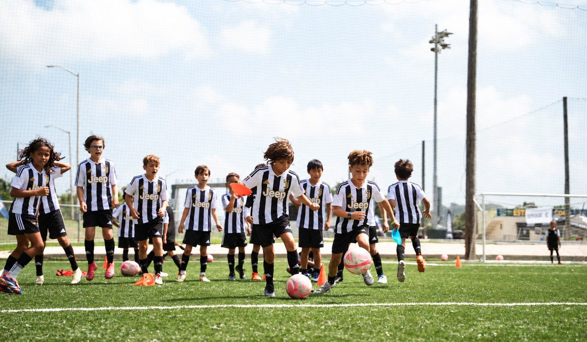
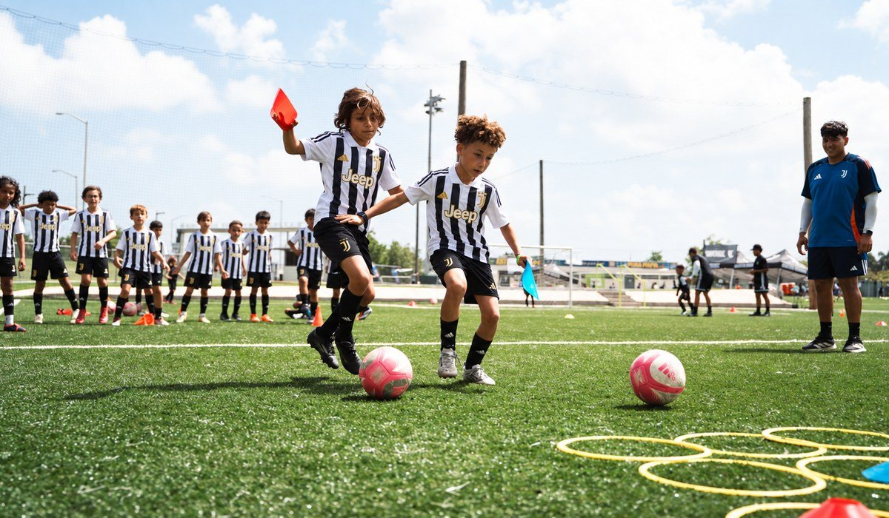

Hola Maria, Muchos camps usan un escudo famoso. Esto es exactamente lo que hace tu hijo o hija con nosotros en Dallas. Parte 1 Físico: cómo se mueve Trabajo físico adaptado a cada edad.  Parte 2 Técnica: el balón, una y otra vez Conducción, pase, tiro y defensa. Los entrenadores corrigen a cada jugador de cerca, en grupos por edad. Parte 3 Juego: entender el partido Partidos en espacio reducido para aplicar lo aprendido, en un ambiente divertido y competitivo. Al final Una evaluación completa Al terminar el camp, cada jugador recibe una evaluación completa de los entrenadores de Juventus Academy. Y después No termina cuando acaba el camp Los jugadores destacados pueden tener la oportunidad de viajar a Italia y entrenar en las instalaciones oficiales de Juventus. Juventus lleva más de cuatro años viniendo a Dallas, y más de 300 familias del área ya entrenaron con nosotros. 📅 Sábado 21 y domingo 22 de noviembre · 9 AM a 1 PM
📍 Soccer Spectrum, 1251 Digital Dr., Richardson, TX 75081
⚽ Niños y niñas de 6 a 16 años, jugadores y porteros |
| Ahorra USD 25 con el código JUVESPECTRUM al pagar. |
¿Dudas o algún problema con el pago?
Escríbenos y te ayudamos a terminar tu inscripción.@juventuscampsusa |
 |